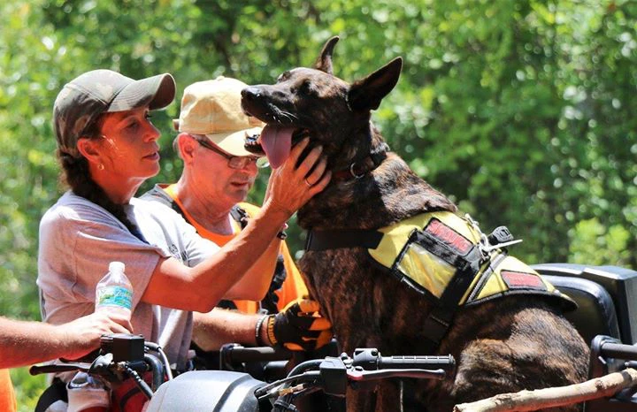
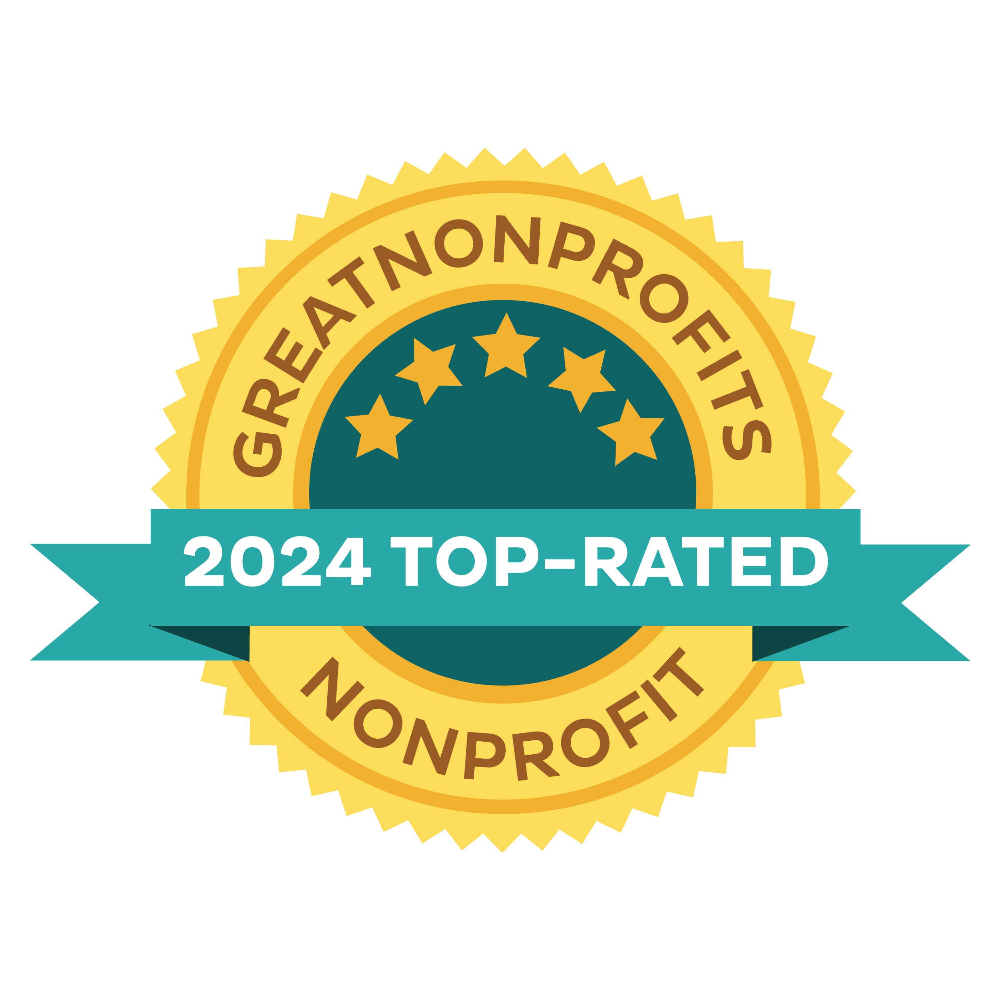
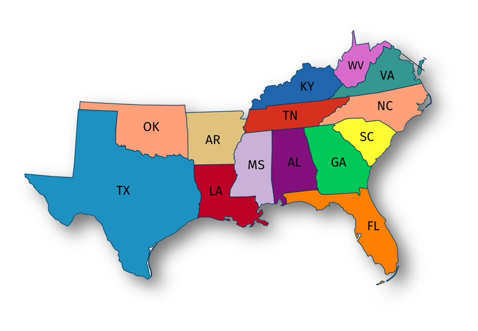
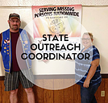
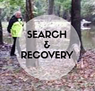
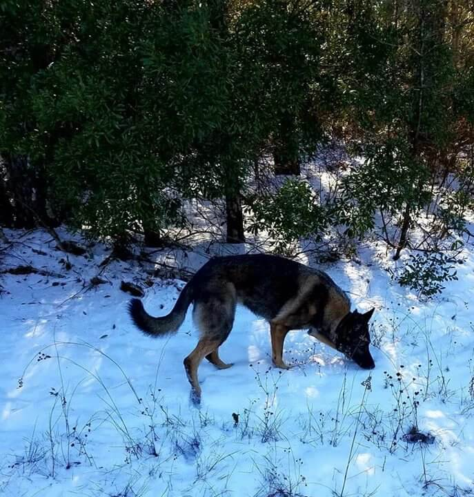
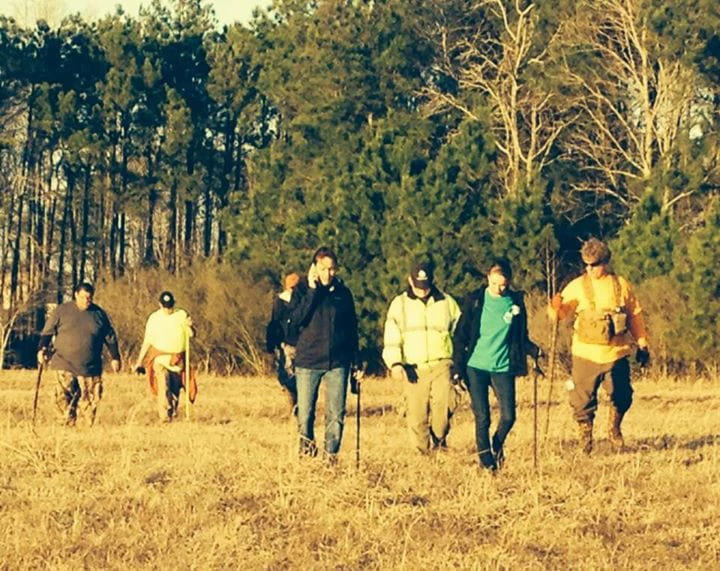
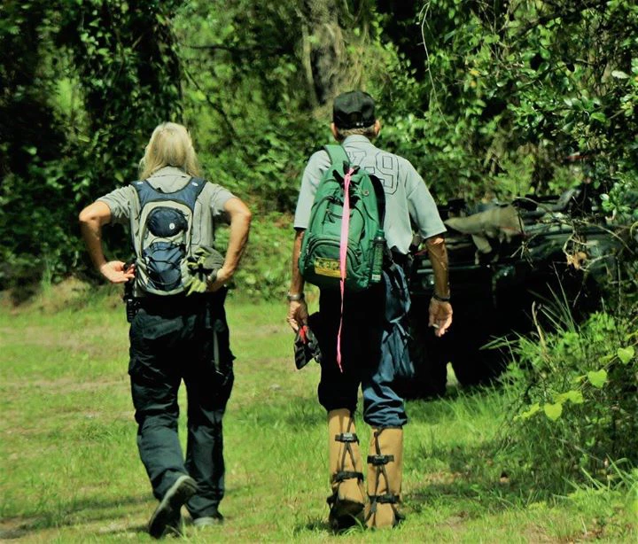
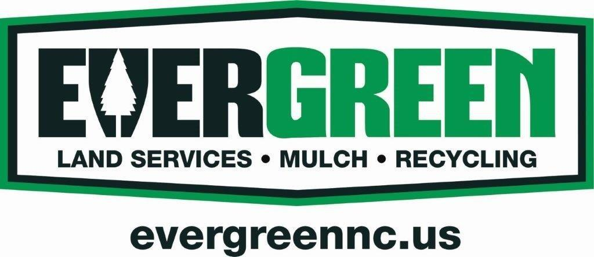
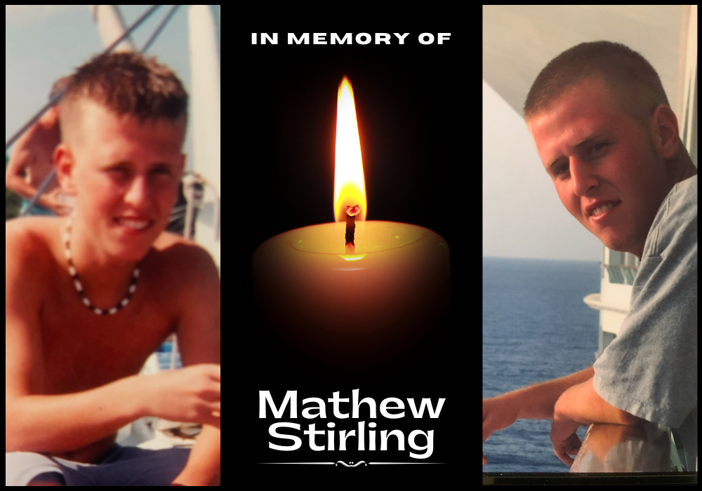

For over three decades, Community United Effort (CUE) has provided free search and recovery teams, specialized K9 units, state outreach coordinators, and relentless advocacy for families with nowhere else to turn.
Serving across all 50 states 24/7/365
K9 Search Unit & ATV ground teams actively canvassing woods and waterways in North Carolina & Virginia sectors.

Preserving CUE Center’s foundational sector organization in an upgraded, high-speed WordPress experience. Browse active missing person registries, report regional sightings, or connect with your State Outreach Coordinator.

Active Coverage RegionCovering North Carolina headquarters, South Carolina, Florida, Georgia, Tennessee, Virginia, Texas, Louisiana, and surrounding states. Search operations here are coordinated alongside local law enforcement, state SAR units, and dedicated volunteer networks.
Annual training symposium for families, investigators & SAR units
Annual national rally tour driving awareness across states

Trained regional liaisons stationed nationwide to guide families
Elite human remains detection & scent handler specialty certifications

Sonar, GPR ground radar, mounted horse, ATV & watercraft equipment
Honoring first responders, community advocates and volunteers
“I offer myself to those who have nowhere else to turn. Desperate people bound together with the commonality of being the loved one of a missing person.”


When a loved one goes missing, every hour is vital. CUE Center deploys credentialed specialists, forensic recovery instruments, and trained community searchers nationwide with zero billing to families.
Human Remains Detection (HRD), trailing, and wilderness search dogs certified to locate survivors or bring closure in remote terrain.
Side-scan sonar boats, certified dive squads, and ground-penetrating radar equipment to search submerged bodies of water and complex sites.
Over 12,000 volunteers across all regional sectors ready to canvass on foot, distribute flyers, and manage incident headquarters.
Help bring them home. If you have any information, no matter how small, please submit a tip or call our 24-hour hotline immediately.

Active Search South SectorLast seen leaving employment near Market St. CUE K9 units and marine teams have completed initial grid searches along coastal waterways.
Vehicle located abandoned near state park corridor. Search teams canvassing pine scrub and wooded areas with drone thermal imagery.
Featured on the annual "On The Road To Remember" national tour. Active billboard initiative and forensic age progression currently deployed.
Because of supporters like you, CUE Center never charges a family in crisis. Your tax-deductible gift directly funds fuel for search convoys, scent equipment for K9 units, billboard campaigns, and emergency family advocacy.

